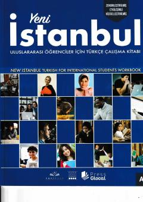

YITurk tilini A2 darajasida o'rganuvchilar uchun amaliy mashqlar to'plami.
Ushbu qo'llanma chet ellik o'quvchilar uchun turk tilini boshlang'ich A2 darajasida o'rganish va amaliy ko'nikmalarni mustahkamlashga mo'ljallangan ish daftari hisoblanadi. Kitobda turli mavzulardagi mashqlar, dialoglar va grammatik topshiriqlar jamlangan.